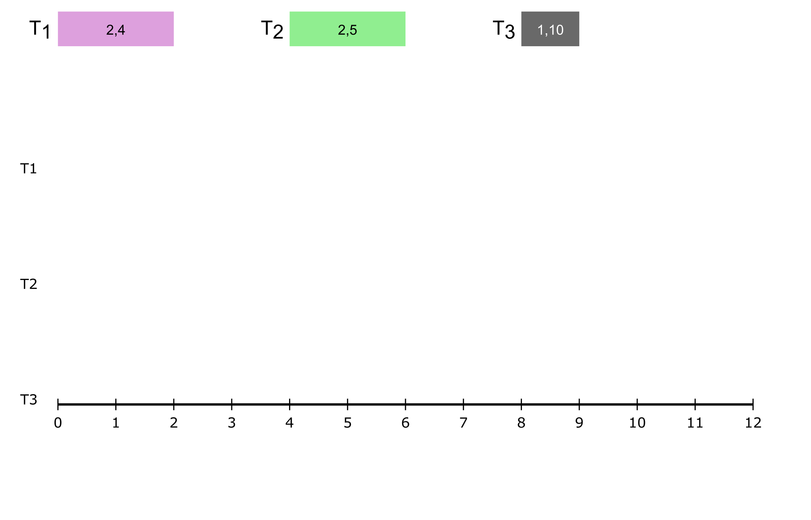
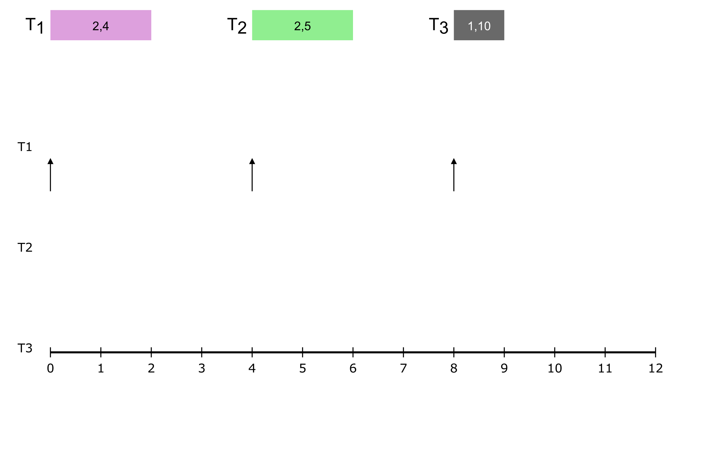
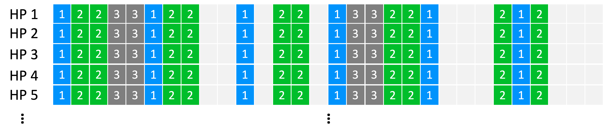

## scheduling | **priority**-based schedulers ## **Design of Autonomous Systems** ### csci 6907/4907-Section 86 ### Prof. **Sibin Mohan** --- so far... --- so far...we have seen **static** schedulers ### _e.g.,_ cyclic executives --- ### _e.g.,_ cyclic executives clearly have disadvantages --- ### _e.g.,_ cyclic executives clearly have disadvantages...lack of, 1. flexibility 2. scalability 3. priority 4. resource management --- ### _e.g.,_ cyclic executives clearly have disadvantages...lack of, 1. flexibility 2. scalability 3. priority 4. resource management **frames** → alleviate _some_ of them...more required --- ### other static priority schemes - [weighted round robin](https://par.nsf.gov/servlets/purl/10383232) - table-scheduling+dispatch --- ### other static priority schemes - [weighted round robin](https://par.nsf.gov/servlets/purl/10383232) - table-scheduling+dispatch while better, all suffer from similar problems --- so, what is the solution? --- **assign priorities** --- **assign priorities** → as jobs **arrive** --- **assign priorities** → as jobs **arrive** scheduler → **dispatches**/**schedules** job accordingly --- scheduler → **dispatches**/**schedules** job accordingly - highest priority → schedule _right away_ - not highest priority → inserted into ready queue --- what do we need? --- what do we need? 1. an **online** scheduler → always available to make scheduling decisions --- what do we need? 1. an **online** scheduler → always available to make scheduling decisions 2. a **priority assignment policy** → so jobs can be scheduled correctly --- but first, let's revisit the **task model** --- ## **task model** | updates - task set → $n$ **periodic** tasks, $\tau = {\tau_1, \tau_2...\tau_n}$ --- ## **task model** | updates - task set → $n$ **periodic** tasks, $\tau = {\tau_1, \tau_2...\tau_n}$ - deadline **equal to** period, _i.e.,_ $T=D$ --- ## **task model** | updates - task set → $n$ **periodic** tasks, $\tau = {\tau_1, \tau_2...\tau_n}$ - deadline **equal to** period, _i.e.,_ $T=D$ - all tasks **independant** → no precedence constraints --- ## **task model** | updates - task set → $n$ **periodic** tasks, $\tau = {\tau_1, \tau_2...\tau_n}$ - deadline **equal to** period, _i.e.,_ $T=D$ - all tasks **independant** → no precedence constraints - tasks **cannot suspend** themselves (or others) --- ## **task model** | updates - task set → $n$ **periodic** tasks, $\tau = {\tau_1, \tau_2...\tau_n}$ - deadline **equal to** period, _i.e.,_ $T=D$ - all tasks **independant** → no precedence constraints - tasks **cannot suspend** themselves (or others) - tasks **preemptible** by OS → followed by highest priority task --- ## **task model** | updates - task set → $n$ **periodic** tasks, $\tau = {\tau_1, \tau_2...\tau_n}$ - deadline **equal to** period, _i.e.,_ $T=D$ - all tasks **independant** → no precedence constraints - tasks **cannot suspend** themselves (or others) - tasks **preemptible** by OS → followed by highest priority task - **bounded** execution time → wcet ($c_1, c_2, ... c_n$) --- ## **task model** | updates - task set → $n$ **periodic** tasks, $\tau = {\tau_1, \tau_2...\tau_n}$ - deadline **equal to** period, _i.e.,_ $T=D$ - all tasks **independant** → no precedence constraints - tasks **cannot suspend** themselves (or others) - tasks **preemptible** by OS → followed by highest priority task - **bounded** execution time → wcet ($c_1, c_2, ... c_n$) - tasks placed into ready queue) **as soon as they arrive** --- ## **task model** | updates - task set → $n$ **periodic** tasks, $\tau = {\tau_1, \tau_2...\tau_n}$ - deadline **equal to** period, _i.e.,_ $T=D$ - all tasks **independant** → no precedence constraints - tasks **cannot suspend** themselves (or others) - tasks **preemptible** by OS → followed by highest priority task - **bounded** execution time → wcet ($c_1, c_2, ... c_n$) - tasks placed into ready queue) **as soon as they arrive** - kernel overheads (_e.g.,_ context switches) → **zero** --- ## **task model** | updates may overly simplifying... --- ## **task model** | updates may overly simplifying... ### helps develop → fundamental results --- ### **two** classes of online schedulers --- ### **two** classes of online schedulers | priority assignment | algorithms | |---------------------|------------| | **static** | [Rate-Monotonic](#rate-monotonic-scheduler-rm) (RM), Deadline-Monotonic | --- ### **two** classes of online schedulers | priority assignment | algorithms | |---------------------|------------| | **static** | [Rate-Monotonic](#rate-monotonic-scheduler-rm) (RM), Deadline-Monotonic | | **dynamic** | [Earliest-Deadline First](#earliest-deadline-first-edf), Least-Slack Time (LST) | || --- Liu and Layland, [Scheduling Algorithms for Multiprogramming in a Hard- Real-Time Environment](https://dl.acm.org/doi/10.1145/321738.321743), Journal of ACM, 1973 --- ## Rate-Monotonic Scheduler (RM) --- ## Rate-Monotonic Scheduler (RM) priority assignment → task **period** --- ## Rate-Monotonic Scheduler (RM) priority assignment → task **period** |period| priority | |------|----------| | shorter | ↑| | longer | ↓| || --- consider followin example: |task|c|T| |----|--|----| | $\tau_1$ | 2| 4 | | $\tau_2$ | 2| 5 | | $\tau_3$ | 1| 10 | || --- consider followin example: |task|c|T| |----|--|----| | $\tau_1$ | 2| 4 | | $\tau_2$ | 2| 5 | | $\tau_3$ | 1| 10 | || based on RM → $\tau_1 > \tau_2 > \tau_3$ --- consider followin example: |task|c|T| |----|--|----| | $\tau_1$ | 2| 4 | | $\tau_2$ | 2| 5 | | $\tau_3$ | 1| 10 | || based on RM → $\tau_1 > \tau_2 > \tau_3$ since, $T_1 < T_2 < T_3$ --- consider following example: |task|c|T| |----|--|----| | $\tau_1$ | 2| 4 | | $\tau_2$ | 2| 5 | | $\tau_3$ | 1| 10 | || based on RM → $\tau_1 > \tau_2 > \tau_3$ since, $T_1 < T_2 < T_3$ is this task set **schedulable**? --- let's use our utilization test $$U = \sum_{i=1}^{n} \frac{c_i}{T_i} \le 1 $$ --- let's use our utilization test $$U = \sum_{i=1}^{n} \frac{c_i}{T_i} \le 1 $$ $$ U = \frac{1}{2} + \frac{1}{4} + \frac{2}{6} $$ --- let's use our utilization test $$U = \sum_{i=1}^{n} \frac{c_i}{T_i} \le 1 $$ $$ U = \frac{1}{2} + \frac{1}{4} + \frac{2}{6} $$ $$ U = 0.5 + 0.4 + 0.1 $$ --- let's use our utilization test $$U = \sum_{i=1}^{n} \frac{c_i}{T_i} \le 1 $$ $$ U = \frac{1}{2} + \frac{1}{4} + \frac{2}{6} $$ $$ U = 0.5 + 0.4 + 0.1 $$ $$ U = 1.0~ \checkmark $$ --- so, it should be **schedulable**...let's plot the schedule --- ---  ---  --- --- --- **note**: first jobs of all three → released together --- priorities → $\tau_1 > \tau_2 > \tau_3$ --- priorities → $\tau_1 > \tau_2 > \tau_3$ --- priorities → $\tau_1 > \tau_2 > \tau_3$ --- priorities → $\tau_1 > \tau_2 > \tau_3$ --- priorities → $\tau_1 > \tau_2 > \tau_3$ --- <img src="img/scheduling/rm_unschedulable/pngs/rm.final.png" width="1500" > <font style="background-color:orange">$\tau_3$ misses deadline!</font> --- <font style="background-color:orange">$\tau_3$ misses deadline!</font> but, it **passed** the schedulability check? <img src="img/scheduling/confused_math.gif" width="700"> --- $\tau_3$ will **never** meet its deadline! --- ### hyperperiod **lcm** of all task periods --- ### hyperperiod **lcm** of all task periods jobs repeat → after **each** hyperperiod --- ### hyperperiod if we have **one** hyperperiod (HP)... [not same task set from example] --- ### hyperperiod if we have **one** hyperperiod (HP)... it repeats **exactly** forever!  --- coming back to our example ||| |---|---| |<img src="img/scheduling/rm_unschedulable/pngs/rm.final.png" width="700" >| $HP = LCM (4, 5, 10) = \textbf{20}$| || --- coming back to our example ||| |---|---| |<img src="img/scheduling/rm_unschedulable/pngs/rm.final.png" width="700" >| $HP = LCM (4, 5, 10) = \textbf{20}$| || $\tau_3$ misses deadline at $t=10$, well within HP! --- $\tau_3$ misses deadline at $t=10$, well within HP! ### it will **never** meet its deadlines! --- well, that's a bummer...our utilization test isn't very useful! --- well, that's a bummer...our utilization test isn't very useful! except for trivial case → $ U > 1$ --- need a **better** test! --- thankfully, these folks figured it out... Liu and Layland, [Scheduling Algorithms for Multiprogramming in a Hard- Real-Time Environment](https://dl.acm.org/doi/10.1145/321738.321743), Journal of ACM, 1973 --- main issue → RM is a **static** priority assignment --- main issue → RM is a **static** priority assignment automatically **restricts** some schedules --- automatically **restricts** some schedules ### **theoretical limit** on utilization --- automatically **restricts** some schedules ### **theoretical limit** on utilization based on number of tasks ($n$) --- ### utilization **upper bound** ($U_{ub}$) --- ### utilization **upper bound** ($U_{ub}$) $$ U_{ub} = n.(2^{\frac{1}{n}} -1) $$ where $n$ → number of tasks --- ### utilization **upper bound** ($U_{ub}$) so, for the task set to be **schedulable**, $$ U = \sum_{i=1}^n \frac{c_i}{T_i} \le U_{ub} $$ <br> where $n$ → number of tasks --- ### utilization **upper bound** ($U_{ub}$) so, for the task set to be **schedulable**, $$ U = \sum_{i=1}^n \frac{c_i}{T_i} \le n.(2^{\frac{1}{n}} -1) $$ <br> where $n$ → number of tasks --- ### utilization **upper bound** ($U_{ub}$) if $U < U_{ub} $ → task set is **schedulable** --- ### utilization **upper bound** ($U_{ub}$) if $U < U_{ub} $ → task set is **schedulable** (**necessary** but **not** sufficient) --- ### $U_{ub}$ vs $n$ $$ U \le n.(2^{\frac{1}{n}} -1) $$ --- ### $U_{ub}$ vs $n$ $$ U \le n.(2^{\frac{1}{n}} -1) $$ as $n$ increases → $U_{ub}$ will **decrease** --- as $n$ increases → $U_{ub}$ will **decrease** but, **how much**? --- let's check using the simulation-plotter... --- from the plotter, we see that... $$n = 3, \quad U_{ub} \approx 0.78 $$ --- $$n = 3, \quad U_{ub} \approx 0.78 $$ task set from example, $U = 1$! **unschedulable!** --- $U_{ub}$ for different numbers of tasks: <img src="img/scheduling/rm_util_bounds.png" width="1100"> --- $U_{ub}$ for different numbers of tasks: ||| |-----|------| | <img src="img/scheduling/rm_util_bounds.png" width="700"> | ↑ $n$, ↓ $U_{ub}$| --- $U_{ub}$ for different numbers of tasks: ||| |-----|------| | <img src="img/scheduling/rm_util_bounds.png" width="700"> | ↑ $n$, ↓ $U_{ub}$| but how **low does** it go? --- let's check using the simulation-plotter...again --- interesting...the values seem to _tend_ to a certain value! <img src="img/scheduling/rm_util_bound_100.png" width="1100"> --- interesting...the values seem to _tend_ to a certain value! <img src="img/scheduling/rm_util_bound_100.png" width="1100"> with increasing $n$, $U_{ub}$ → <scb>0.69</scb> --- for any RM-priority-assigned real-time system, if <scb>U < 0.69</scb> → **schedulable**! --- let's revisit our example from the cyclic executive... <img src="img/scheduling/cyclic/cyclic6.svg" width="1500"> --- add some **period** information to it... |task|c|T| |----|--|----| | $\tau_1$ | 1| **4** | | $\tau_2$ | 2| **6** | | $\tau_3$ | 3| **12** | || --- add some **period** information to it... |task|c|T| |----|--|----| | $\tau_1$ | 1| **4** | | $\tau_2$ | 2| **6** | | $\tau_3$ | 3| **12** | || $$U = \frac{1}{4} + \frac{2}{6} + \frac{3}{12} $$ --- $$U = \frac{1}{4} + \frac{2}{6} + \frac{3}{12} $$ $$U = 0.25 + 0.33 + 0.25 $$ --- $$U = \frac{1}{4} + \frac{2}{6} + \frac{3}{12} $$ $$U = 0.25 + 0.33 + 0.25 $$ $$U \approx 0.83 $$ --- $$U \approx 0.83 $$ schedulable? --- schedulable? ||| |-----|------| | <img src="img/scheduling/rm_util_bounds.png" width="700"> | $$U \approx 0.83 $$| --- schedulable? ||| |-----|------| | <img src="img/scheduling/rm_util_bounds.png" width="700"> | $$U \approx 0.83 $$ $n=3$ → $U < \textbf{0.78}$| --- ||| |-----|------| | <img src="img/scheduling/rm_util_bounds.png" width="700"> | $$U \approx 0.83 $$ $n=3$ → $U < \textbf{0.78}$| **not** schedulable! --- **not** schedulable...let's plot the schedule --- --- --- --- --- --- --- --- --- --- --- --- <font style="background-color:orange"><b>all</b> tasks meet deadlines!</font> --- what is going on? --- remember the _necessary but **not** sufficient_ bit? --- remember the _necessary but **not** sufficient_ bit? |result of test|schedulable?| |--------------|------------| | pass, _i.e.,_ $U_{ub} < 0.69$ | yes | | fail, $U_{ub} > 0.69$ | **unsure**| || --- remember the _necessary but **not** sufficient_ bit? |result of test|schedulable?| |--------------|------------| | pass, _i.e.,_ $U_{ub} < 0.69$ | yes | | fail, $U_{ub} > 0.69$ | **unsure**| || as we see → can still contruct **schedulable** task sets --- need a _better_ test → **exact** analysis --- ### Response Time Analysis (RTA) --- ### Response Time Analysis (RTA) - **all** jobs of task complete before their deadlines → **schedulable** --- ### Response Time Analysis (RTA) - **all** jobs of task complete before their deadlines → **schedulable** - caveat → account for **interference** from _higher priority_ jobs --- ### Response Time Analysis (RTA) | details --- ### Response Time Analysis (RTA) | details 1. **worst-case** response time of $\tau_i$, $$R_i = c_i + I_i$$ --- ### Response Time Analysis (RTA) | details 1. **worst-case** response time of $\tau_i$, $$R_i = c_i + I_i$$ $I_i$ → **interference** faced by $\tau_i$'s job from **all** higher prioriy jobs until then --- ### Response Time Analysis (RTA) | details 2. for _each_ higher priority job, $\tau_j$, number of _jobs_ during time interval $R_i$ = $\left\lceil \frac{R_i}{T_j} \right\rceil$ Note: Since _each period_ of task $\tau_j$ results in a new job being released. Since RM gives higher priority to shorter periods, those released jobs will execute ahead of the current teak, $\tau_i$ --- ### Response Time Analysis (RTA) | details 3. $\lceil {R_i}/{T_j} \rceil$ number of $\tau_j$'s jobs **before** $\tau_i$ --- ### Response Time Analysis (RTA) | details 3. $\lceil {R_i}/{T_j} \rceil$ number of $\tau_j$'s jobs **before** $\tau_i$ interference caused by **all** of them: $$I_j = \left\lceil \frac{R_i}{T_j} \right\rceil .\ c_j$$ --- ### Response Time Analysis (RTA) | details 4. the **total** interference, $$I = \sum_{j\in hp(i)}\left\lceil \frac{R_i}{T_j} \right\rceil .\ c_j $$ Note: the **total** interference then, is the sum of the individual interference by each of the higher priority jobs, _i.e.,_ --- ### Response Time Analysis (RTA) | details 5. **response time** for $\tau_i$ $$R_i = c_i + I_i$$ Note: Combine its own WCET --- ### Response Time Analysis (RTA) | details 5. **response time** for $\tau_i$ $$R_i = c_i + I_i$$ $$ R_i = c_i + \sum_{j\in hp(i)}\left\lceil \frac{R_i}{T_j} \right\rceil .\ c_j $$ --- ### Response Time Analysis (RTA) | details 6. at **each** stage, $$ \forall \tau_i: R_i < T_i $$ --- ### Response Time Analysis (RTA) | details 6. at **each** stage, $$ \forall \tau_i: R_i < T_i $$ ||| |--|--| |yes| schedulable| |no | not schedulable| || --- applying RTA to our errant example --- applying RTA to our errant example 1. assign priorities: $\tau_1 > \tau_2 > \tau_3$ --- applying RTA to our errant example 2. response time calculations --- applying RTA to our errant example 2. response time calculations each task → calculate response time **iterative analysis** --- $$ R_i = c_i + \sum_{j\in hp(i)}\left\lceil \frac{R_i}{T_j} \right\rceil .\ c_j $$ |task | iteration | calculations| $R_i < T_i$ | |-----|-----------|-------------|-------------| --- $$ R_i = c_i + \sum_{j\in hp(i)}\left\lceil \frac{R_i}{T_j} \right\rceil .\ c_j $$ |task | iteration | calculations| $R_i < T_i$ | |-----|-----------|-------------|-------------| | $\tau_1$ | 1 | $R_1 = c_1 = 1$ | yes [ $1<4$ ] --- $$ R_i = c_i + \sum_{j\in hp(i)}\left\lceil \frac{R_i}{T_j} \right\rceil .\ c_j $$ |task | iteration | calculations| $R_i < T_i$ | |-----|-----------|-------------|-------------| | $\tau_1$ | 1 | $R_1 = c_1 = 1$ | yes [ $1<4$ ] | $\tau_2$ | 1 | $R_2^0 = c_2 = 2$ <br> $R_2^1 = c_2 + \lceil\frac{R_2^0}{T_1}\rceil c_1$ <bR> $R_2^1 = 2 + \lceil\frac{2}{4}\rceil \cdot 1 = 3$ || --- $$ R_i = c_i + \sum_{j\in hp(i)}\left\lceil \frac{R_i}{T_j} \right\rceil .\ c_j $$ |task | iteration | calculations| $R_i < T_i$ | |-----|-----------|-------------|-------------| | $\tau_1$ | 1 | $R_1 = c_1 = 1$ | yes [ $1<4$ ] | $\tau_2$ | 1 | $R_2^0 = c_2 = 2$ <br> $R_2^1 = c_2 + \lceil\frac{R_2^0}{T_1}\rceil c_1$ <bR> $R_2^1 = 2 + \lceil\frac{2}{4}\rceil \cdot 1 = 3$ || | | 2 | $R_2^2 = 2 + \lceil\frac{3}{4}\rceil \cdot 1 = 3$ [**stop**] | yes [ $3 < 6$ ] --- $$ R_i = c_i + \sum_{j\in hp(i)}\left\lceil \frac{R_i}{T_j} \right\rceil .\ c_j $$ |task | iteration | calculations| $R_i < T_i$ | |-----|-----------|-------------|-------------| | $\tau_3$ | 1 | $R_3^0 = c_3 = 3$ <br> $R_3^1 = c_3 + \lceil\frac{R_3^0}{T_1}\rceil c_1 + \lceil\frac{R_3^0}{T_2}\rceil c_2$ <br> $R_3^1 = 3 + \lceil\frac{3}{4}\rceil \cdot 1 + \lceil\frac{3}{6}\rceil \cdot 2 = 6$ || --- $$ R_i = c_i + \sum_{j\in hp(i)}\left\lceil \frac{R_i}{T_j} \right\rceil .\ c_j $$ |task | iteration | calculations| $R_i < T_i$ | |-----|-----------|-------------|-------------| | $\tau_3$ | 1 | $R_3^0 = c_3 = 3$ <br> $R_3^1 = c_3 + \lceil\frac{R_3^0}{T_1}\rceil c_1 + \lceil\frac{R_3^0}{T_2}\rceil c_2$ <br> $R_3^1 = 3 + \lceil\frac{3}{4}\rceil \cdot 1 + \lceil\frac{3}{6}\rceil \cdot 2 = 6$ || | | 2 | $R_3^2 = 3 + \lceil\frac{6}{4}\rceil \cdot 1 + \lceil\frac{6}{6}\rceil \cdot 2 = 8$ | | --- $$ R_i = c_i + \sum_{j\in hp(i)}\left\lceil \frac{R_i}{T_j} \right\rceil .\ c_j $$ |task | iteration | calculations| $R_i < T_i$ | |-----|-----------|-------------|-------------| | $\tau_3$ | 1 | $R_3^0 = c_3 = 3$ <br> $R_3^1 = c_3 + \lceil\frac{R_3^0}{T_1}\rceil c_1 + \lceil\frac{R_3^0}{T_2}\rceil c_2$ <br> $R_3^1 = 3 + \lceil\frac{3}{4}\rceil \cdot 1 + \lceil\frac{3}{6}\rceil \cdot 2 = 6$ || | | 2 | $R_3^2 = 3 + \lceil\frac{6}{4}\rceil \cdot 1 + \lceil\frac{6}{6}\rceil \cdot 2 = 8$ | | | | 3 | $R_3^3 = 3 + \lceil\frac{8}{4}\rceil \cdot 1 + \lceil\frac{8}{6}\rceil \cdot 2 = 8$ [**stop**] | yes [$8<12$] || --- based on RTA → **schedulable** --- response time analysis algorithm: <img src="img/scheduling/response_time_algo.png" width="1100"> --- there exist **other** static assignment algorithms --- there exist **other** [static assignment algorithms](https://iris.unimore.it/bitstream/11380/1118762/4/POST_PRINT_JSA2016Priority.pdf) - fixed priority pre-emptive scheduling (FPPS) - **deadline-monotonic** --- Liu and Layland paper showed that... --- Liu and Layland paper showed that... ### RM is **optimal** --- Liu and Layland paper showed that... ### RM is **optimal** * <br> [* _synchronous_ periodic task sets with _implicit deadlines_] --- problem with static priority assignments? --- problem with static priority assignments? ### non-optimal --- ### non-optimal they don't use **entire capacity** available to them --- they don't use **entire capacity** available to them _e.g.,_ we saw that RM schedulers <img src="img/scheduling/rm_util_bound_100.png" width="1100"> utilization bounds taper off → <scb>0.69</scb> --- we can create task sets with _higher_ utilizations (recall Response-Time Analysis) --- we can create task sets with _higher_ utilizations (recall Response-Time Analysis) <br> significant **manual effort** --- common case → **wasting nearly <scb>31%</scb> utilization**! --- solution? --- solution? **dynamic assignment** of priorities --- **dynamic assignment** of priorities 1. [FIFO](https://d-nb.info/1240614632/34) 2. [Least Slack Time](https://www.javatpoint.com/least-slack-time-lst-scheduling-algorithm-in-real-time-systems) --- **dynamic assignment** of priorities 1. [FIFO](https://d-nb.info/1240614632/34) 2. [Least Slack Time](https://www.javatpoint.com/least-slack-time-lst-scheduling-algorithm-in-real-time-systems) 3. [**Earliest-Deadline First**](#earliest-deadline-first-edf) (EDF) --- ## Earliest-Deadline First (EDF) --- ## Earliest-Deadline First (EDF) assign priorities → **absolute deadlines** of jobs --- ## Earliest-Deadline First (EDF) for every _scheduling event_, 1. search queue → process **closest** to its deadline 2. schedule for execution --- ## Earliest-Deadline First (EDF) - **exact** priority of job → depends on its deadline --- ## Earliest-Deadline First (EDF) - **exact** priority of job → depends on its deadline - but deadlines → **calculated statically** --- ## Earliest-Deadline First (EDF) - **exact** priority of job → depends on its deadline - but deadlines → **calculated statically** - different jobs of _same_ task → **different priorities** --- ## Earliest-Deadline First (EDF) - **exact** priority of job → depends on its deadline - but deadlines → **calculated statically** - different jobs of _same_ task → **different priorities** - _each_ job → only **one priority level** --- ## Earliest-Deadline First (EDF) - **exact** priority of job → depends on its deadline - but deadlines → **calculated statically** - different jobs of _same_ task → **different priorities** - _each_ job → only **one priority level** <br> as jobs complete → priorities of remaining/incoming jobs change --- ## edf schedulability test --- ## edf schedulability test remember our first test? $$ U = \sum_{i=1}^{n} \frac{c_i}{T_i} \le 1 $$ --- ## edf schedulability test remember our first test? $$ U = \sum_{i=1}^{n} \frac{c_i}{T_i} \le 1 $$ that's it! this is the **edf schedulability test**! --- ## edf schedulability test remember our first test? $$ U = \sum_{i=1}^{n} \frac{c_i}{T_i} \le 1 $$ edf schedulability test → very **simple**! --- need to agree on some _niceties_... --- consider two jobs that have, |issue| priority | |-----|----------| | **same** deadline | **?** | --- consider two jobs that have, |issue| priority | |-----|----------| | **same** deadline | job → **earlier release** | --- consider two jobs that have, |issue| priority | |-----|----------| | **same** deadline | job → **earlier release** | | same deadlines **and** same release | **?** | --- consider two jobs that have, |issue| priority | |-----|----------| | **same** deadline | job → **earlier release** | | same deadlines **and** same release | **lower index** | || --- consider two jobs that have, |issue| priority | |-----|----------| | **same** deadline | job → **earlier release** | | same deadlines **and** same release | **lower index** | || **note**: not rules, just policies --- consider two jobs that have, |issue| priority | |-----|----------| | **same** deadline | job → **earlier release** | | same deadlines **and** same release | **lower index** | || **note**: not rules, just policies → can be changed --- consider two jobs that have, |issue| priority | |-----|----------| | **same** deadline | job → **earlier release** | | same deadlines **and** same release | **lower index** | || **note**: not rules, just policies → can be changed maintain **consistency**! --- same deadlines **and** same release --- same deadlines **and** same release → redesign to **combine** the tasks --- revisit **unschedulable** RM example from before |task|c|T| |----|--|----| | $\tau_1$ | 2| 4 | | $\tau_2$ | 2| 5 | | $\tau_3$ | 1| 10| --- revisit **unschedulable** RM example from before <img src="img/scheduling/rm_unschedulable/pngs/rm.final.png" width="1500" > --- revisit **unschedulable** RM example from before $$U = \frac{2}{4} + \frac{2}{5} + \frac{1}{10} = 0.5 + 0.4 + 0.1 = 1 \le 1$$ --- revisit **unschedulable** RM example from before $$U = \frac{2}{4} + \frac{2}{5} + \frac{1}{10} = 0.5 + 0.4 + 0.1 = 1 \le 1$$ <font style="background-color:orange">**schedulable** via EDF!</font> --- ### edf schedule --- ### edf schedule --- ### edf schedule --- ### edf schedule --- ### edf schedule --- ### edf schedule --- ### edf schedule --- ### edf schedule schedulable? are we done? --- ### edf schedule schedulable? are we done? → **check until hyperperiod**! --- ### edf schedule vs rm schedule <img src="img/scheduling/rm_unschedulable/pngs/rm.final.png" width="700" > --- ## edf is **provably optimal** --- ## edf is **provably optimal** - if task set is schedulable by _any_ algorithm - then **edf** can schedule it --- ## edf is **provably optimal** - can squeeze out **maximum** from system - can _theoretically_* schedule task sets with $U = 1$! --- ## edf is **provably optimal** - can squeeze out **maximum** from system - can _theoretically_* schedule task sets with $U = 1$! why is this "theoretical"? --- ### edf can **never** touch $U=1$ in practice --- ### edf can **never** touch $U=1$ in practice primarily due to **overheads** - context-switch overheads - run-time calculations → dynamic piorities --- ## RM vs EDF --- ## RM vs EDF |parameter | rm | edf | |----------|----|-----| | optimality | ✓ (static) | ✓ | --- ## RM vs EDF |parameter | rm | edf | |----------|----|-----| | optimality | ✓ (static) | ✓ | | context switch overheads | ✓ | ✗ | --- ## RM vs EDF |parameter | rm | edf | |----------|----|-----| | optimality | ✓ (static) | ✓ | | context switch overheads | ✓ | ✗ | | preemptions | ✗ | ✓ | --- ## RM vs EDF |parameter | rm | edf | |----------|----|-----| | optimality | ✓ (static) | ✓ | | context switch overheads | ✓ | ✗ | | preemptions | ✗ | ✓ | | analysis overheads | ✗ | ✓ | --- ## RM vs EDF |parameter | rm | edf | |----------|----|-----| | optimality | ✓ (static) | ✓ | | context switch overheads | ✓ | ✗ | | preemptions | ✗ | ✓ | | analysis overheads | ✗ | ✓ | | utilization | ✗ | ✓ | --- ## RM vs EDF |parameter | rm | edf | |----------|----|-----| | optimality | ✓ (static) | ✓ | | context switch overheads | ✓ | ✗ | | preemptions | ✗ | ✓ | | analysis overheads | ✗ | ✓ | | utilization | ✗ | ✓ | | implementation ease | ✓ | ✗ | --- ## RM vs EDF |parameter | rm | edf | |----------|----|-----| | optimality | ✓ (static) | ✓ | | context switch overheads | ✓ | ✗ | | preemptions | ✗ | ✓ | | analysis overheads | ✗ | ✓ | | utilization | ✗ | ✓ | | implementation ease | ✓ | ✗ | | predictability | ✓ | ✗ | --- ## RM vs EDF |parameter | rm | edf | |----------|----|-----| | optimality | ✓ (static) | ✓ | | context switch overheads | ✓ | ✗ | | preemptions | ✗ | ✓ | | analysis overheads | ✗ | ✓ | | utilization | ✗ | ✓ | | implementation ease | ✓ | ✗ | | predictability | ✓ | ✗ | |**total**| <scb>4</scb> | <scb>4</scb> | || --- other **issues** with priority assignments algorithms --- other **issues** with priority assignments algorithms - **simplistic task model** - other situations exist → $ D <T $, $D > T$ --- other **issues** with priority assignments algorithms - **simplistic task model** - other situations exist → $ D <T $, $D > T$ - **multicore** → NP-complete! - many [**heuristics**](https://dl.acm.org/doi/pdf/10.1145/1978802.1978814) exist --- other **issues** with priority assignments algorithms - **simplistic task model** - other situations exist → $ D <T $, $D > T$ - **multicore** → NP-complete! - many [**heuristics**](https://dl.acm.org/doi/pdf/10.1145/1978802.1978814) exist - [**priority inheritance protocols**](https://www.eecs.umich.edu/courses/eecs571/lectures/lecture6-schedule3.pdf) → resource contentions --- other **issues** with priority assignments algorithms - **simplistic task model** - other situations exist → $ D <T $, $D > T$ - **multicore** → NP-complete! - many [**heuristics**](https://dl.acm.org/doi/pdf/10.1145/1978802.1978814) exist - [**priority inheritance protocols**](https://www.eecs.umich.edu/courses/eecs571/lectures/lecture6-schedule3.pdf) → resource contentions - [**power consumption** and scheduling](https://www.eecs.umich.edu/courses/eecs571/lectures/lecture12-rtdvs.pdf) --- ### RT scheduling & other domains - **[memory](https://link.springer.com/article/10.1007/s11241-012-9158-9)** - **[networks](https://sibin.github.io/papers/2017_RTSS_SDNQoS_Rakesh.pdf)** - **[networks-on-chip](https://www.computer.org/csdl/journal/td/2017/05/07728147/13rRUwj7coW)** - **[5G](https://ieeexplore.ieee.org/stamp/stamp.jsp?arnumber=9773317)**